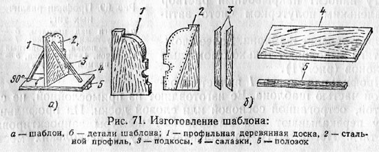
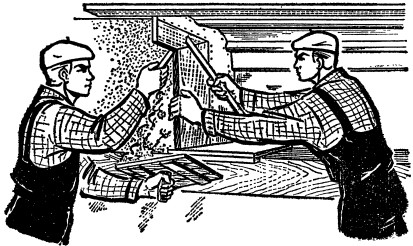

Тяги — это профилированные полосы выполненные из строительного раствора путем поступательного прямолинейного или криволинейного движения раствора.
Тяги вытягивают с помощью шаблона

Рисунок (Изготовление шаблона: а- шаблон, б – детали шаблона; 1 – профильная деревянная доска, 2 – стальной профиль, 3 – подкосы, 4 – салазки, 5- полозок)
Тяги вытягивают из известково-гипсового или цементно-извествого раствора.
Состав беспесчаной накрывки: 3 части известкового теста и 0,5—1 часть гипса, просеянных через сито с отверстиями размером в 1 мм2. Раствор должен иметь густоту сметаны.
Вытягивание тяг избела можно не делать, если раствор для грунта будет приготовлен на мелком просеянном песке, а тяга вытянута чисто и без раковин.

Разделку углов выполняют от руки с помощью линейки. Линейку изготавливают из дерева. Один конец линейки срезают под углом 30-45 и прибивают к нему 2..3-миллиметровую стальную полоску. Длина линейки 300…500 мм.